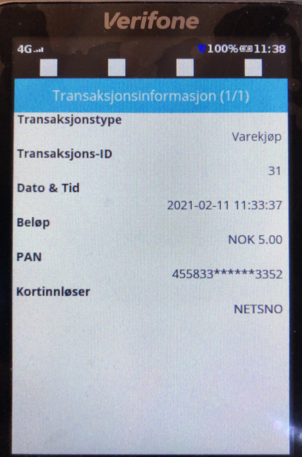

Avstemmingen feilet på terminalen
Instruksjon for å håndtering feil under avstemming for Verifone terminaler
Det kan være flere årsaker til at avstemmingen feiler på terminalen. Under følger en instruksjon på hvordan dere kan løse dette selv, eventuelt må de ringe Verifone support for veiledning eller kontakte brukerstøtte.
Restarte terminalen
Det kan hjelpes å restarte terminalen. Dette gjøres på følgende måte:
- Trykk på den grønne knappen på terminalen i cirka 10 sekunder. Terminalen vil da starte på nytt av seg selv.
- Etter terminalen har startet på nytt, prøv å starte «K01 Starte/Avslutte kasseoppgjør» på nytt.
Fjerne pågående transaksjoner
Feilen kan komme av at det ligger en transaksjon eller melding i terminalen under «pågående transaksjoner. Dette kan være en korrupt transaksjon grunnet skadet kort, eller en teknisk annullering som ikke terminalen kan sende inn. Det stopper da for avstemming da terminalen prøver først å sende inn de lagrede.
Under følger en instruks på hvordan dere kan løse dette selv, eventuelt må de ringe Verifone support for veiledning.
Dette innebærer å slette det lagrede transaksjonene som ikke kan sendes inn.
Gjør følgende på terminalen:
- Trykk inn tastene 4 og 6 samtidig
- Oppgi passord «1234»
- Velg menypunkt «Transaksjonsinfo»
- Velg menypunkt «Pågående transaksjoner»
- Den eldste på denne listen bør ligge øverst og være transaksjonen som hindrer innsending.
- Noter gjerne beløpet og dato sånn at man kan sjekke om det faktisk er varekjøp, retur eller annen type transaksjon.
- Deretter må denne slettes for å komme videre. Velg den og trykk «Slett» Koden for sletting er «268431».
- Det kan være lurt å slette alle, men det er som oftest bare den øverste som trengs å slettes.
- Etter denne/disse er slettet, gå ut av administrasjons modus, ved å trykke på den røde avbryt knappen på terminal tastaturet
- Trykk inn tastene 4 og 6 samtidig
- Oppgi passord «1234»
- Velg menypunkt «Oppgjørsmeny»
- Velg menypunkt «Send offline transaksjoner»
- Når dette er gjort, kan du starte «K01 Starte/Avslutte kasseoppgjør» i Dedge på nytt
- Hvis det fremdeles ikke virker gjenta oppskriften fra punkt 1 til 11 på nytt, men denne gangen slett alle transaksjoner i «Pågående transaksjoner», og utfør «Send offline transaksjoner» på nytt før du igjen starter «K01 Starte/Avslutte kasseoppgjør».
- Hvis du etter å ha gjort dette, og du fremdeles har problemer med kasseoppgjøret, kontakt kontakt brukerstøtte. Feiler innsending så kan det være at samme kort ble forsøkt flere ganger og man må slette neste på listen også.
Slett en og en transaksjon i listen til man får avstemt. Noter gjerne beløpet og dato sånn at man kan sjekke om det faktisk er salg som er slettet.
Det vil se sånn ut. Noter om det er varekjøp, retur eller annen type transaksjon.
Under kan du se et bilde av hvordan det ser ut på terminalen:

Ved forslag til endringer eller feil i instruksjonen, kontakt brukerstøtte.